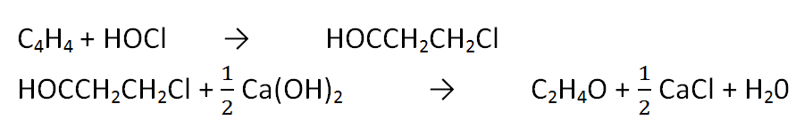
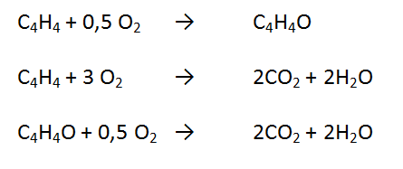

Ethylene oxide is a chemical used to make ethylene glycol. In addition, ethyl oxide can also be used to make polyethylene oxide commonly applied as an additive in the detergent manufacturing process. Ethylene oxide can be prepared by the oxidation of ethylene. Ethylene is the simplest oleofin hydrocarbon and is the simplest oleofin hydrocarbon and is an important ingredient in the chemical industry. Ethylene is produced from petroleum and natural gas, but ethylene feedstock is industrialized from long chain hydrocarbon cracking. Ethylene Oxide can be commercially produced by several processes including:
The chlorohydrin process consists of two main reactions namely the ethylene chlorohydrin formation reaction and the ethylene oxide forming reactor of ethylene chlorohydrin. The reactions are:
The first reaction takes place in a packed tower reactor at a pressure of 2-3 bar and a temperature of 27-43 oC with a yield of 85% - 90%. In the first reactor it is necessary to careful control for the prevention of the formation of byproducts, namely ethylene dioxide (Kirk - Othmer, 1998)
The product of the first reactor is a liquid ethylene chlorohydrin out of the packed tower base. Further reacted with Ca (OH) 2 slurry in a hydrolysis reactor at 100 oC. The second reaction yield is 90% - 95%. The second reactor is a vapor of ethylene oxide which is then condensed and fed to the purification unit (Mc Ketta 1984).
The formation of ethylene oxide by direct oxidation process can be divided into two, namely:
In this process occurs the formation of ethylene oxide and side reactions produce carbon dioxide and water.
The first reaction takes place in a fixed bed multitibe at a pressure of 20-30 bar and a temperature of 220-235 oC using a silver catalyst. Per-pass conversion is kept low by 8% - 12% to get high selectivity, that is 75% - 82%. To prevent the effect of ethylene explosivity on oxygen, it is necessary to add nitrogen in the reactor cycle (Kirk - Othmer, 1998)
The reaction is the same as the direct oxidation process with technical oxygen. However it runs at a pressure of 10-30 bar and the temperature is 220-277 oC using a silver catalyst. The per-pass conversion is higher by 20% - 30% to get selectivity 63% - 75%.
With the use of air with high nitrogen content, it does not require special eluent gases because air nitrogen favors as diesel for prevention of explosivity. However, it is necessary to purging some unreacted reactants before recycling in the reactor to prevent the accumulation of nitrogen in the reactor (Kirk - Othmer, 1998)